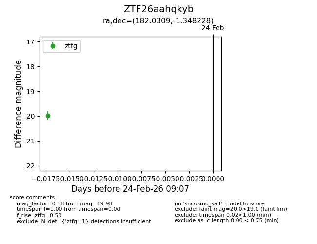
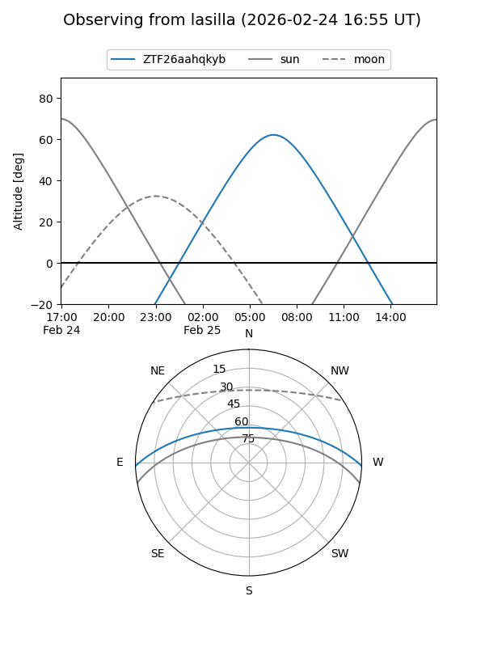
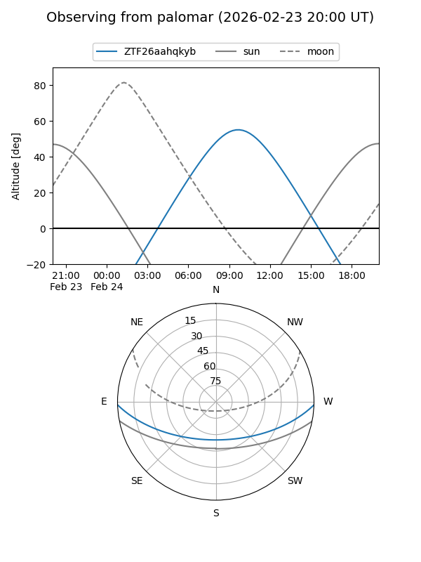

ZTF26aahqkyb
Target ZTF26aahqkyb at 2026-02-24 09:08
Aliases and brokers:
FINK: link
Lasair: link
ALeRCE: link
alt names
ZTF26aahqkyb (ztf,fink_ztf)
Coordinates:
equatorial (ra, dec) = 182.0309,-1.34823
equatorial (HMS+DMS) = 12:08:07.42,-01:20:53.62
galactic (l, b) = (281.0940,+59.67439)
Flags:
Photometry:
last ztfg=19.98
1 ztfg detections
Lightcurve

Visibility


Additional plots